Unlock copy & paste on restricted websites instantly.
After installing the extension, enable “Copy Mode” and refresh the page. You can now copy normally using Ctrl + C / Ctrl + V.
Enter your license key inside the extension popup to unlock full features. Avoid sharing it publicly.
This tool is for educational use only. Users are responsible for how they use it.
Minimal, powerful tools focused on privacy, simplicity, and performance.
COPY CAT is a lightweight browser extension designed to unlock copy, paste, and right-click functionality on restricted websites.
COPY CAT PRO © all rights not reserved 😼